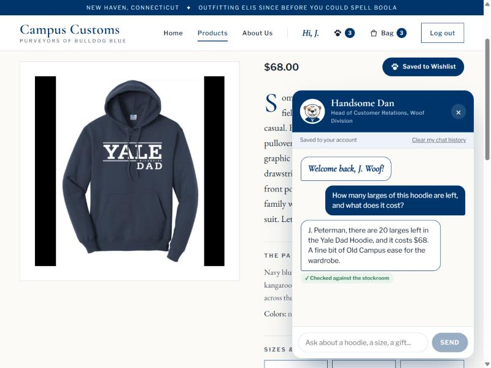
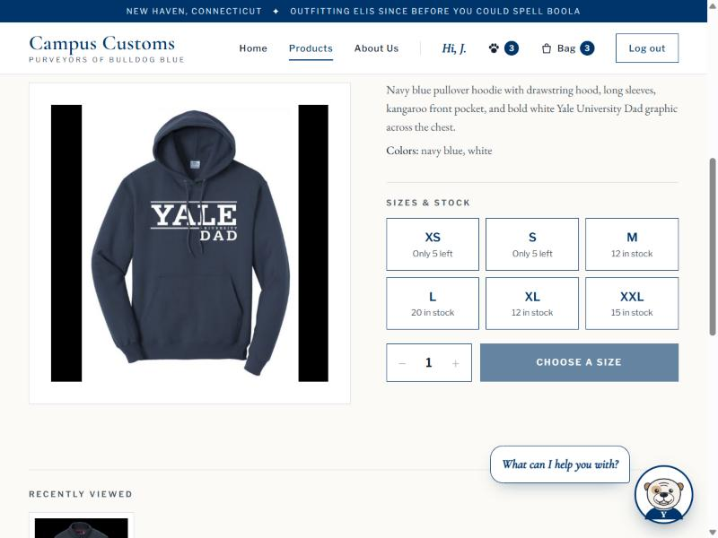
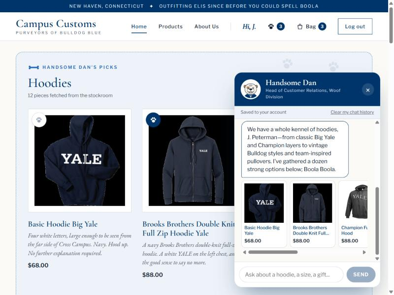
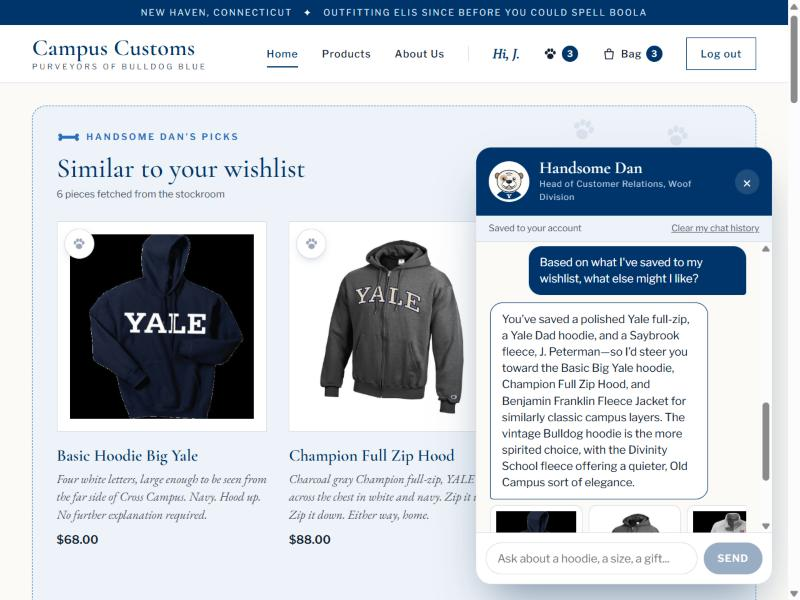
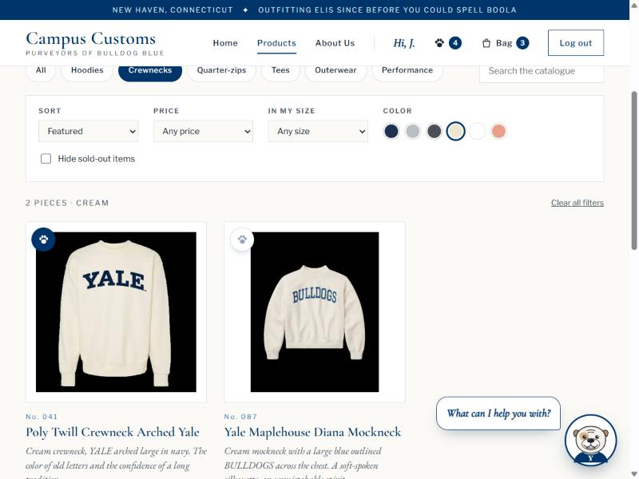
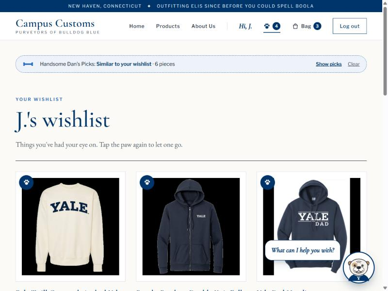

Executive summary
Three required checks, run on the live site. Every number Handsome Dan said was compared against the store's database. All three pass.
Tip: click any screenshot to open it full size.
Exhibit A · Check 1
Honest inventory: Dan quotes stock and price from the database
Asked Handsome Dan (on the Yale Dad Hoodie page): “How many larges of this hoodie are left, and what does it cost?”


What this proves
Dan looked the item up with his tools instead of guessing. His stock count and price exactly match the database, and the back-end fact-checker verified both before the reply was allowed to reach the shopper.
Database receipt (queried directly from campus_customs.db)
| Fact | Dan said | Database | Result |
|---|---|---|---|
Yale Dad Hoodie · price (catalogue.price) | $68 | 68.0 | ✓ Match |
Yale Dad Hoodie · size L (inventory.quantity) | 20 left | 20 | ✓ Match |
Exhibit B · Check 2
Dynamic search-result cards appear on the page
Asked Handsome Dan (from the Home page): “What hoodies do you have?”

What this proves
The agent returns structured product matches, and the website builds real product cards from them on whatever page the shopper is on. Each card links to that product's own page (large image and full details), and every name and price comes from the database, not from the AI's text.
Bonus, same feature, personalized: “Based on what I’ve saved to my wishlist, what else might I like?”

What this proves
The page-card feature works for personalized questions too: the wishlist (Problem 9) feeds Dan's suggestions, and the three items he named match the shopper's saved list in the database.
Exhibit C · Check 3 (Problem 9 feature)
The paw-print wishlist: save an item, find it on the Wishlist page
Did: on the catalogue (filtered to Crewnecks · Cream), tapped the paw print on the Poly Twill Crewneck Arched Yale, then tapped the paw next to Bag in the menu.


What this proves
Shoppers can save items for later without touching the bag, and the wishlist is saved to their account (4 rows in wishlist_items, newest: poly-twill-crewneck-arched-yale), so it follows them across visits and powers Dan's suggestions.
“Honest prices, live stock, and a bulldog who checks his facts. The defense rests.”
Handsome Dan, Esq. · Campus Customs Counsel for Customer RelationsCourse homework project. Screenshots use only the fictional test account “J. Peterman” (example.com address); no real customer data appears. Not affiliated with any real retailer.